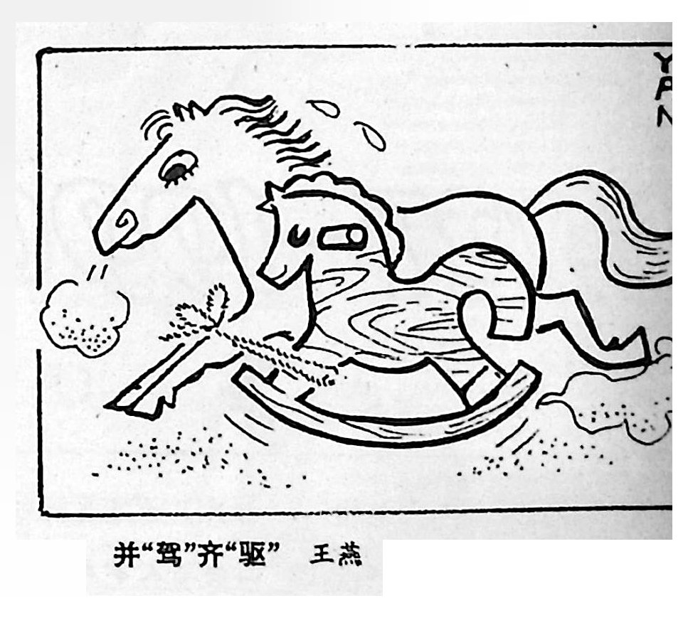

王燕 《人事》1990年第8期（总第59期），封三
并“驾”齐“驱”
Running Neck and Neck
- Description
- A real horse gallops flat out, sweating; beside it a smug rocking horse rocks back and forth on the spot, and is counted as keeping pace.
- Note
- 并驾齐驱, “to gallop side by side,” means equal performance. Under egalitarian pay and rating, workers who toiled and those who went through the motions were treated alike.
- Artist
- Wang Yan 王燕
- Published in
- 《人事》1990年第8期（总第59期）, inside back cover
- Themes
- Formalism · Bureaucratism

Cite
Wang Yan, “并“驾”齐“驱”” [Running Neck and Neck], Renshi (Personnel) 《人事》, 1990, no. 8, inside back cover.